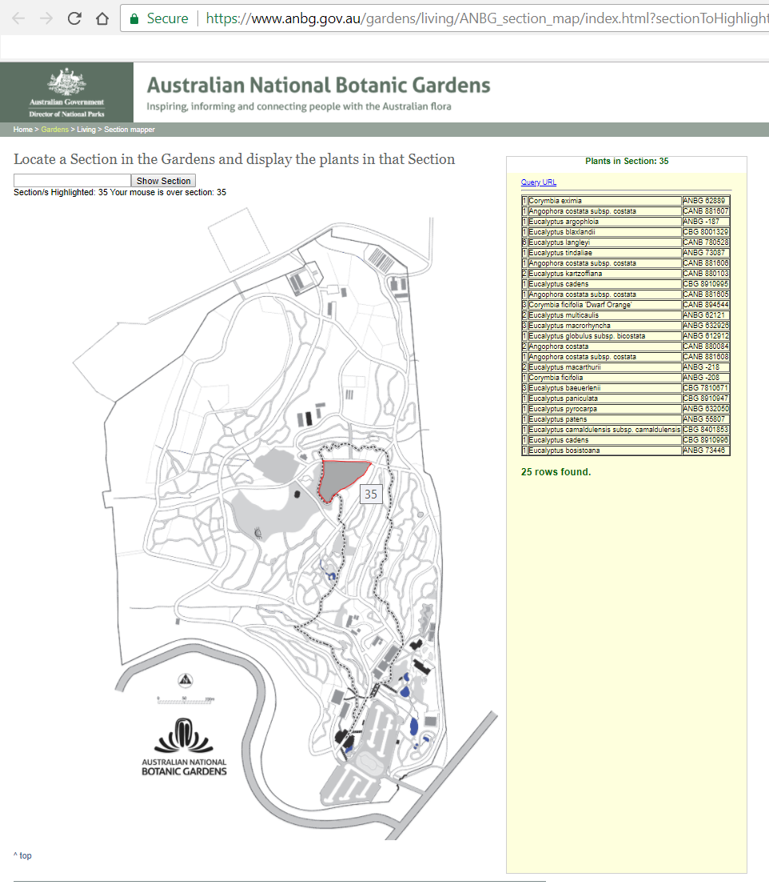
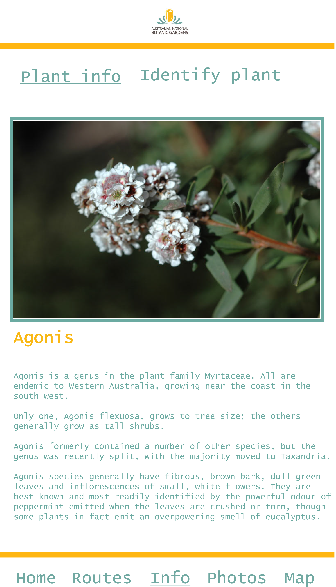
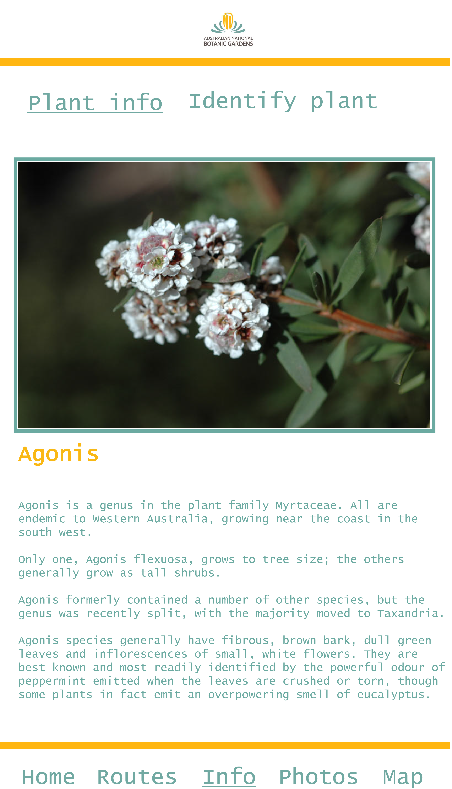

Australian National Botanic Gardens Mobile Web Application
Introduction
The Australian National Botanic Gardens is 40 hectares in size being located in the nation's capital of Canberra the garden was designed to be of scientific purpose and not just ornamental purpose (Australian National Botanic Gardens, 2018). The gardens contain approximately 74,000 individual plants and the collection features more than 6,200 species of plants that comprise approximately one third of Australia's native plants making the gardens the largest scientific collection of Australian native plants originating from wild plant sources.(Australian National Botanic Gardens, 2018)
Content and context
At present the Australian National Botanic Gardens engages visitors digitally mostly through a website. The website has many useful features such as the ability to search for plants located in the gardens with the plants location being shown on an illustrated map. Another useful feature of the existing website is the feature that provides the visitor the ability to search and browse a catalogue of images of plants. Unfortunately the website has not been designed to adapt to be used from mobile devices and is not responsive. This doesn't allow visitors to navigate the gardens while accessing information about plants from their mobile device. Visit the current map at https://www.anbg.gov.au/gardens/living/ANBG_section_map/index.html?sectionToHighlight
Existing design solutions
An example of a mobile friendly approach to providing visitors information to navigate the gardens is the free iPhone application 'ANBG Birds' produced by the Director of National Parks. This application catalogues the resident and migratory birds that inhabit the Australian National Botanic Gardens providing the visitors the ability to journey through a range of habitats the birds appear in. The application displays for 60 birds images of the birds, sounds of the bird calls and descriptions of the bird species. The application includes information about walks visitors can take to find the specific birds in the gardens. The application also has a feature to create itineraries to help visitors make the most of their trip to the Gardens.(Apple, 2018)
The Royal Botanic Garden Sydney iPhone application has the most modern existing design solution related to the proposed mobile web application for the Australian National Botanic Gardens. The application features self-guided walking tours containing audio using an augmented reality (AR) overlay to enrich the visitor experience. The application also contains information about the history of the Royal Botanic Garden Sydney, a feature to assist visitors to discover restaurants, amenities and landmarks within the garden, information about current events and exhibitions located in the garden and Apple Watch integration to provide real-time wayfinding and navigation to visitors.(Apple, 2018)
Another iPhone application that is a companion to the Royal Botanic Garden Sydney iPhone application is The Australian PlantBank iPhone application. This application is targeted at providing information about the PlantBank's seed vault research into helping to restore threatened habitats, conserve wild plant diversity, and provide for a healthy and sustainable future. Visitors can see the living laboratory of garden beds and the endangered Cumberland Plain Woodland to learn about the research in real life.(Apple, 2018)
One of the best researched mobile applications for a state operated garden was completed by the Kew Royal Botanic Gardens. During October 2010 Kew Gardens commissioned an in-depth study of their visitors' motivations and information needs when visiting the garden's 300-acre site. The express aim of the study was that the finding should guide the development of new mobile applications. Upon completion of the study it was found that most Kew Gardens visitors had social, emotional, and spiritual, rather than intellectual, motivations during their time at the gardens. They did not visit the gardens to find out more and they did not want or need to know their precise location at all times. It was discovered that the visitors loved the sense of unguided exploration and the serendipitous discoveries they made at Kew Gardens. A term was coined that captured the emotional sense that most visitors enjoyed while visiting the gardens, the visitors wanted to become 'delightfully lost.'(Museumsandtheweb.com,2018)
Based on this research an iPhone application was created and further research on its effectiveness was conducted with visitors who used the design. The understanding of audience motivations informed the development of the Kew Gardens application using the term of 'delightfully lost' to guide the application's design and development to conform to that purpose. The application would not provide a structured route opting to aim to provide suggestions of items to explore thereby taking visitors in new directions and away from habitual routes.'A key focus of the design was to avoid visitors being wedded to the phone visually. The application was designed to be a tool used in the periphery of the garden experience. The visitor would use the application throughout the journey around the garden moving the application to the centre of their focus and back to the periphery as little or often as the visitor desired. To facilitate a serendipitous discovery experience of the Gardens the application included the following features. A map with GPS location detection technology for orientation and user customization options allowing the visitor's interests to be saved to the map. An augmented reality overlay designed to encourage visitor discoveries via exploration of the gardens the augmented reality would also display the location of trees. A QR code reader allows visitors to scan plants and link to in-app content with detailed text and audio visual information about the plant being scanned. A photo sharing feature using the Flickr social media website that allows social image sharing via uploads by Kew Gardens staff and visitors designed to encourage visitors away from their habitual visitation patterns. Finally an image gallery of images grouped in themes with the themes designed to encourage visitors to walk around the gardens.(Electronic Workshops in Computing (eWiC), 2018)
Insights from existing design solutions
A key insight to be taken from the existing design solutions is that based on the Kew Gardens research visitors to the Australian National Botanic Gardens will also likely want the application we create to allow them to be 'delightfully lost'.(Museumsandtheweb.com, 2018) This means the application is designed to assist and inspire visitors to explore the gardens.
Another important insight comes once again from the Kew Gardens application although this time it relates to a survey conducted on the errors that users of the application experienced. It was found that a large number of visitors who used the application experienced technical difficulties associated with the download procedure for application updates. The update procedure gave the visitors the latest recommendations which are driven by seasonal changes in landscape. The problem specifically was that when visitors moved away from arrival gates and into the garden the garden provided WiFi could not transmit to their phones and the updates then needed to rely on the phones data 3G signal. If the users did not have the 3G enabled they would receive the latest updates.(Museumsandtheweb.com, 2018)
Design proposal
The proposed design is a mobile web application that seeks to provide visitors to the gardens a navigation tool that extends existing scientific knowledge published by the gardens into the real world while visitors explore the gardens. In order to incorporate the lessons from existing research the application's features will be an interactive map, a plant identification feature that displays information about the plant being viewed, social media integration for visitor photo sharing and a list of routes that updates based on the seasonal state of the gardens. The application will aim to use the existing information on the existing Australian National Botanic Gardens website such as the image database of the plants. External detailed descriptions of the plants can be attained from the Plant Breeders Rights database and Wikipedia.

 



Technical specifications
The interactive map will use the Geolocation API to locate the visitor's location in the gardens and display the location on a map.
The plant identification feature will use the phone video camera to sample images of the plant and in real world information to identify the plant in the phone camera view port via the MediaStream API's.
The MediaStream API's will be used to take and access the visitors photo's allowing the visitor to upload the photo's to social media when they have an internet connection.
The list of routes will be transferred to the phone via a JSON file, most likely using the GeoJSON format to display the routes. To avoid the update errors experience by other applications this application will take advantage of the Service Worker API and specifically the background sync feature to update the route around the garden in the background even while the visitor is not on the url of the application.
The data storage will be achieved by using the Service Worker API and localStorage API allowing the visitors to access information about plants whether they are connected to the internet at the time of using the application or not.
Prototype
Below is a prototype
Product backlog
Client
As a client I require that the garden be represented in a
positive inclusive fashion.
As a client I require the application to be accessible to
the widest amount of community members and be technically capable of serving
various amounts of traffic.
As a client I require the application to increase visitor
interest and visitor satisfaction when visiting the gardens.
User
As a user I desire an application to assist me explore
the gardens.
As a user I desire an application that works well on my
device.
As a user I desire to share my experience at the gardens
with others.
Developer
As a developer I need to make certain that all information
is presented in a useable and accessible format.
As a developer I need to gather garden assets such as
information in the form of text and style guides in the form of colours and images
to be used in the application.
As a developer I need to code the application so that it is
used effectively by different types of users.
As a developer I need to code the geolocation API to
assist the user's navigation when using the application.
As a developer I need to code the local storage API to
allow the users to save information when using the application.
As a developer I need to code the media streams API to
allow the users to take photos when using the application.
As a developer I need to code the user interface to allow
the users to access all the features of the application.
Summary
In summary the Australian National Botanic Gardens Mobile Web Application uses research an inspiration of existing applications that attempt to solve similar problems with modern web API's to provide visitors a mobile tool of exploration to be used in the gardens providing valuable information whether they are connected to the internet at the time or not.
Bibliography
Apple. (2018). ANBG Birds. Retrieved from https://itunes.apple.com/au/app/anbg-birds/id644118110?mt=8
Apple. (2018). Royal Botanic Garden Sydney. Retrieved from https://itunes.apple.com/au/app/royal-botanic-garden-sydney/id1332941220?mt=8
Apple. (2018). The Australian PlantBank. Retrieved from https://itunes.apple.com/au/app/the-australian-plantbank/id763344284?mt=8
Australian National Botanic Garden. (2018). The Plant Records Unit. Retrieved from Australian National Botanic Garden: https://www.anbg.gov.au/gardens/living/records/index.html
Australian National Botanic Gardens. (2018). Australian National Botanic Gardens. Retrieved from https://www.anbg.gov.au/gardens/about/history/index.html
Australian National Botanic Gardens. (2018). Our living collection. Retrieved from https://www.anbg.gov.au/gardens/living/
Electronic Workshops in Computing (eWiC). (2018). A study of the iPhone app at Kew Gardens: Improving the visitor experience. Retrieved from https://ewic.bcs.org/content/ConMediaFile/20321
Museumsandtheweb.com. (2018). Delightfully Lost: A New Kind of Wayfinding at Kew. Retrieved from Museumsandtheweb.com: https://www.museumsandtheweb.com/mw2012/papers/delightfully_lost_a_new_kind_of_wayfinding_at_.html